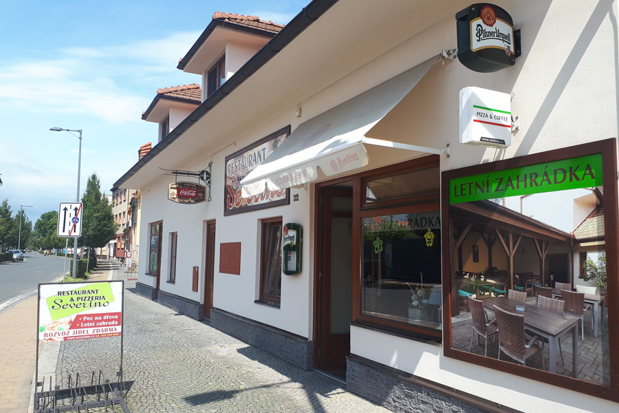

Severino - pizza | restaurace - Poděbrady

Restaurace | Pizzeria Severino Poděbrady
se nachází v klidné části města Poděbrady, 150m od kolonády. Příjemné prostředí uspokojí všechny věkové kategorie, v teplých dnech především klidnou zahrádkou s dětským koutem. Pokud se rozhodnete navštívit naši restauraci, určitě ochutnejte pizzu připravenou v peci na dřevo, ale pochutnáte si i na dalších pokrmech. Těšíme se na Vaši návštěvu a případně Vám jídlo rádi dovezeme.Kolektiv Pizzerie Severino